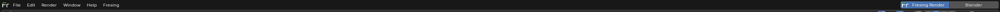
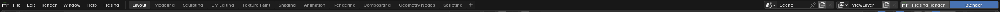
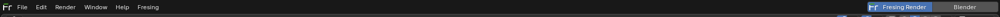
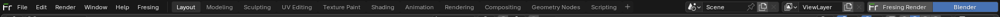
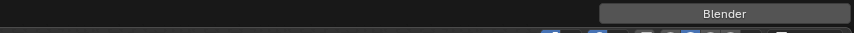
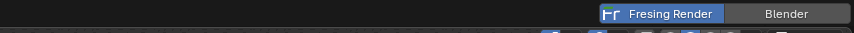
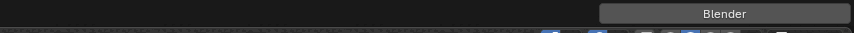
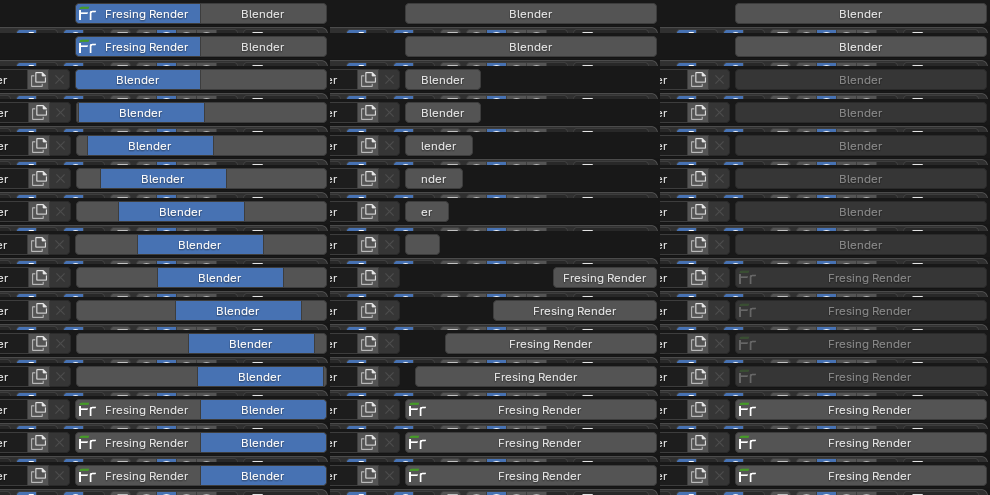

0297 – A Blender / Fresing Render switch at the top right
All pictures and clips are the real app (0.2.212 code, Blender 5.2.3) on the 4-core web test machine without a graphics card (virtual screen, UI scale 100 %), with the test crane. Nothing here is in the app yet: it is a prototype on its own branch. Pick at the bottom, press Copy and paste the line to the lead.
1 · Where it sits
At the top bar's right end, after everything Blender puts there. In the Fresing workspaces the right end is empty today. In full Blender, Scene and View Layer come back and the switch sits after them.




Width used: 12 UI units = 240 px at 100 % (both halves wide enough for "Fr Fresing Render"). A plain button (A) can be narrower.
2 · The four looks
Each clip: the button at rest, the click, the change, at rest again; first Fresing → Blender, then back. "Real speed" is the 150 ms slide as it should look on a fast PC. "Slow" is the same frames about 7 × slower, so you can see what happens. The frames are drawn by the real top bar at fixed steps of the slide, then put together. This machine is too slow to film the slide live.




3 · What was measured (web test machine, no graphics card)
| What | Measured | Where |
|---|---|---|
The switch itself (Show all of Blender and back, fresing.blender_all) | 1.3–2.1 ms (22 of 24 clicks; two at 3.5 and 4.3 ms) | 2560 × 1440, test crane, all looks |
| Top bar drawn again after the click | ~2 ms after the click | same |
| The button's own drawing (Python) per redraw | 0.5 ms (max 0.9) | same, 77 redraws |
| Redraw of the whole window | 202–220 ms (software drawing, no graphics card) | 2560 × 1440, test crane |
| Top-bar frames during a 150 ms slide | 2 (start, and the end only 280–350 ms after the click): the slide does not show | 2560 × 1440, test crane |
| Top-bar frames during a 150 ms slide | 3–4, at rest after 150–220 ms | 1280 × 720, empty scene |
| Same, asking a redraw of the whole window instead of only the top bar | 0 frames in 350 ms | both sizes |
| A playing animation, with and without the slide running non-stop | 3.3–3.4 frames/s both ways: no difference this machine can show | 2560 × 1440, test crane |
On a PC with a graphics card a window redraw usually takes a few ms. That is an expectation, not a measurement: at 60 Hz the slide would then show about 9 frames, and while it runs the top bar is drawn 9 extra times in 0.15 s. The build task adds a PC-check line that measures exactly this on your PC.
4 · Blender's logo
Not checked yet: blender.org cannot be reached from the test machine, so the Blender Foundation's logo rules were not read at their source. Until the lead checks them (blender.org/about/logo), the prototype uses words and the Fr mark only: "Blender" without the logo.
5 · Your pick
Look
Slide time (B, C, D)
Blender's logo on the button
Anything else